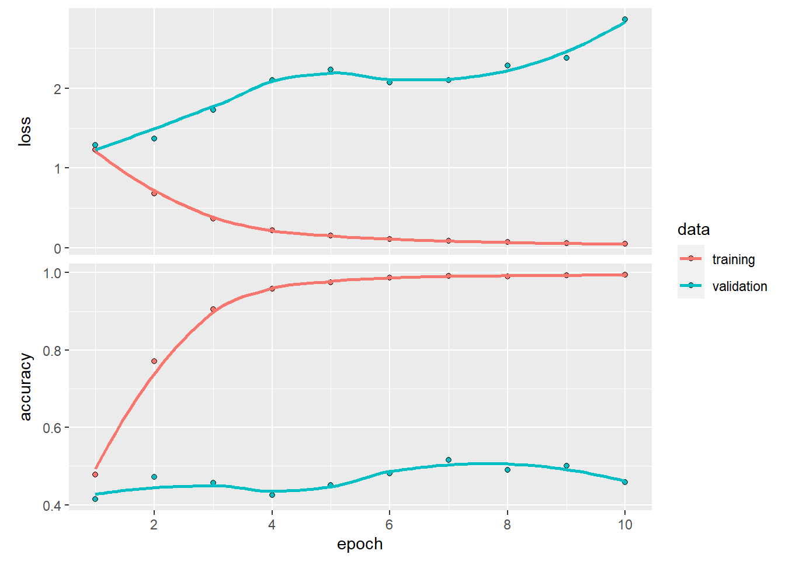
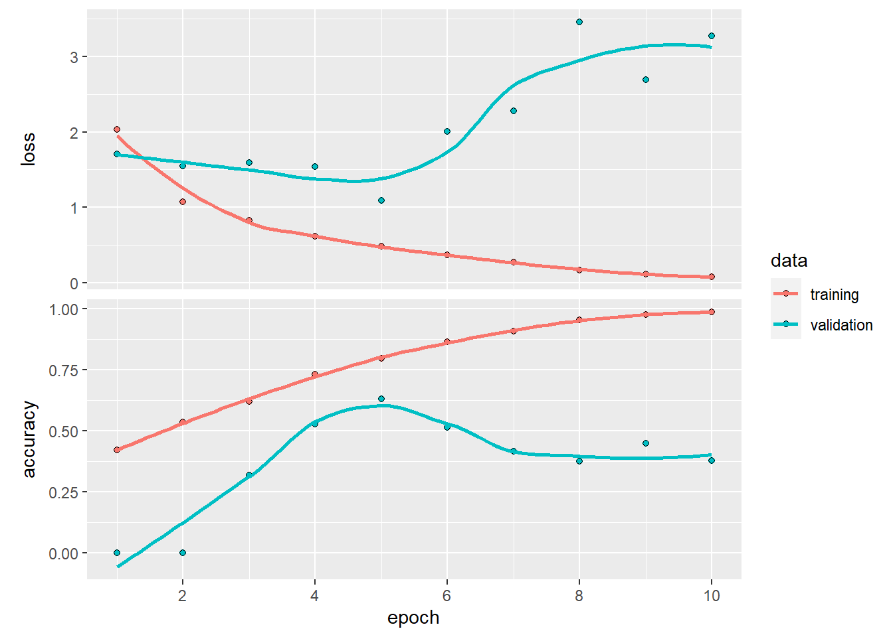

a1
Figure 1: Barplot Showing the Number of Speeches Given Per Year.
Figure 2: Barplot Showing the Number of Speeches Given By Each President.

Figure 3: Barplot Showing the Speech Length of Each Speech.

Figure 4: Plot Showing the Accuracy and Loss of The Feed Forward Neural Network Model Using Bag of Words Features .

Figure 5: Plot Showing the Accuracy and Loss of The Feed Forward Neural Network Model Using TF-IDF Features .

Figure 7: Plot Showing the Accuracy and Loss of The Feed Forward Neural Network Model Using Word Embeddings.
Figure 8: Plot Showing the Accuracy and Loss of The Convolutional Neural Network Model Using Word Embeddings.
Epoch 1/10
226/226 - 27s - loss: 1.2546 - accuracy: 0.4361 - val_loss: 1.5732 - val_accuracy: 0.0000e+00 - 27s/epoch - 119ms/step
Epoch 2/10
226/226 - 15s - loss: 1.0733 - accuracy: 0.5197 - val_loss: 1.6015 - val_accuracy: 0.0000e+00 - 15s/epoch - 68ms/step
Epoch 3/10
226/226 - 15s - loss: 0.9592 - accuracy: 0.5795 - val_loss: 1.6730 - val_accuracy: 0.2452 - 15s/epoch - 66ms/step
Epoch 4/10
226/226 - 15s - loss: 0.8459 - accuracy: 0.6457 - val_loss: 1.3682 - val_accuracy: 0.3790 - 15s/epoch - 68ms/step
Epoch 5/10
226/226 - 14s - loss: 0.7807 - accuracy: 0.6864 - val_loss: 1.5090 - val_accuracy: 0.3599 - 14s/epoch - 63ms/step
Epoch 6/10
226/226 - 14s - loss: 0.7171 - accuracy: 0.7112 - val_loss: 1.3820 - val_accuracy: 0.4283 - 14s/epoch - 63ms/step
Epoch 7/10
226/226 - 14s - loss: 0.6764 - accuracy: 0.7316 - val_loss: 1.5129 - val_accuracy: 0.4220 - 14s/epoch - 63ms/step
Epoch 8/10
226/226 - 14s - loss: 0.6395 - accuracy: 0.7505 - val_loss: 1.4325 - val_accuracy: 0.4586 - 14s/epoch - 64ms/step
Epoch 9/10
226/226 - 15s - loss: 0.5897 - accuracy: 0.7762 - val_loss: 1.4902 - val_accuracy: 0.4363 - 15s/epoch - 66ms/step
Epoch 10/10
226/226 - 16s - loss: 0.5519 - accuracy: 0.7836 - val_loss: 1.7050 - val_accuracy: 0.4618 - 16s/epoch - 71ms/step110/110 - 3s - loss: 1.2865 - accuracy: 0.5513 - 3s/epoch - 23ms/stepFigure 9: Plot Showing the Accuracy and Loss of The Recurrent Neural Network Model Using Word Embeddings.
| Neural.Network.Type | Data.Type | Loss | Accuracy |
|---|---|---|---|
| Multilayer Perceptron | Bag of Words | 2.01 | 0.55 |
| Multilayer Perceptron | TFIDF | 2.78 | 0.51 |
| Multilayer Perceptron | Word Embeddings | 2.74 | 0.47 |
| Convolutional Neural Networks | Word Embeddings | 1.85 | 0.50 |
| Recurrent Neural Network | Word Embeddings | 1.40 | 0.54 |
Table 1: Table Showing Neural Network Metrics
Figure 6: Histogram Showing the Sequence Length After Tokenization